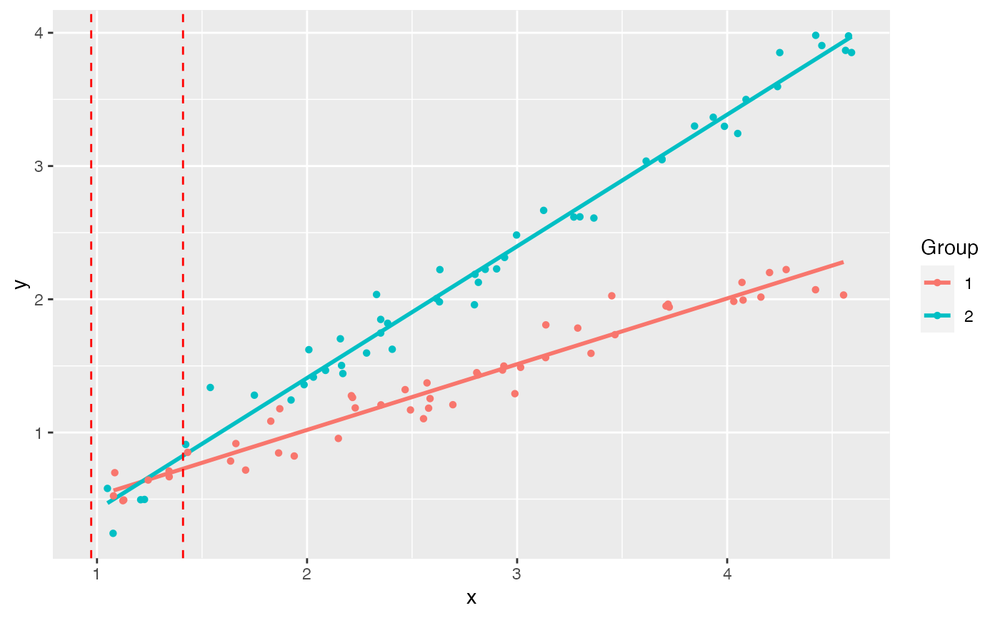

Data set 1 from from White, 2003
A data frame with 50 observations on the following 2 variables.
V1a numeric vector
V2a numeric vector
White CR (2003) Allometric analysis beyond heterogenous regression slopes: Use of the Johnson-Neyman Technique in comparative biology. Physiol Biochem Zool 76: 135-140.
#> 'data.frame': 50 obs. of 2 variables: #> $ V1: num 3.45 2.49 1.86 1.83 1.12 ... #> $ V2: num 2.026 1.169 0.847 1.085 0.488 ...#> 'data.frame': 50 obs. of 2 variables: #> $ V1: num 2.63 3 1.99 2.28 2.8 ... #> $ V2: num 1.98 2.48 1.36 1.6 2.19 ...#>#>#> #> Johnson-Neyman Technique #> #> Alpha = 0.05 #> #> Data 1: #> Slope 0.4935 #> Intercept 0.03244 #> #> Data 2: #> Slope 0.9883 #> Intercept -0.5676 #> #> Region of non-significant slope difference #> Lower: 0.9724 #> Upper: 1.41 #>#>